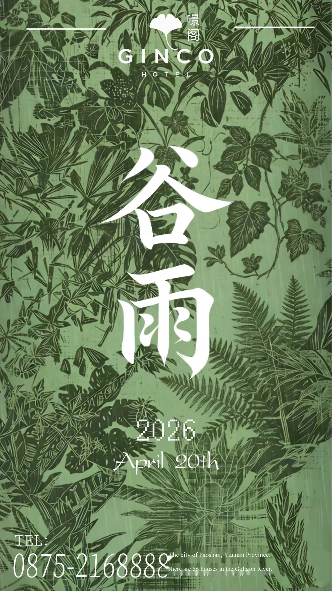
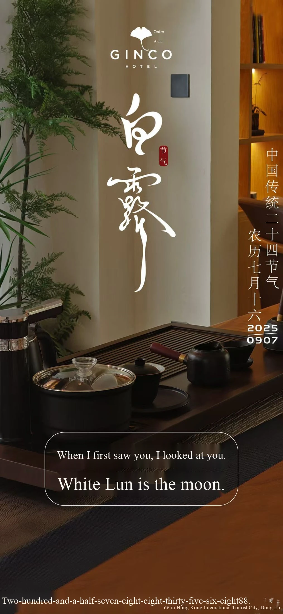
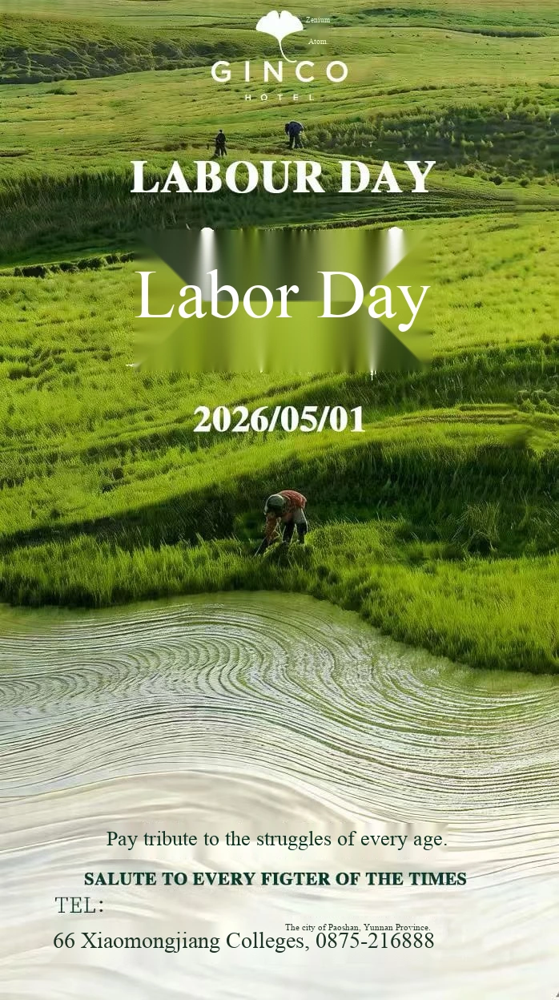
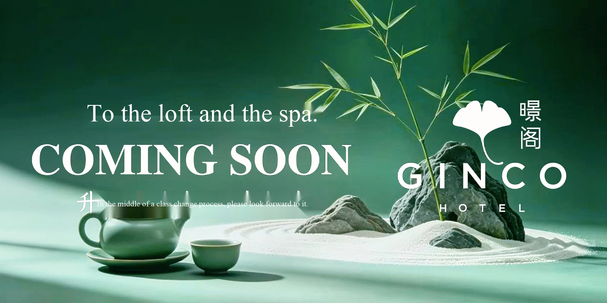
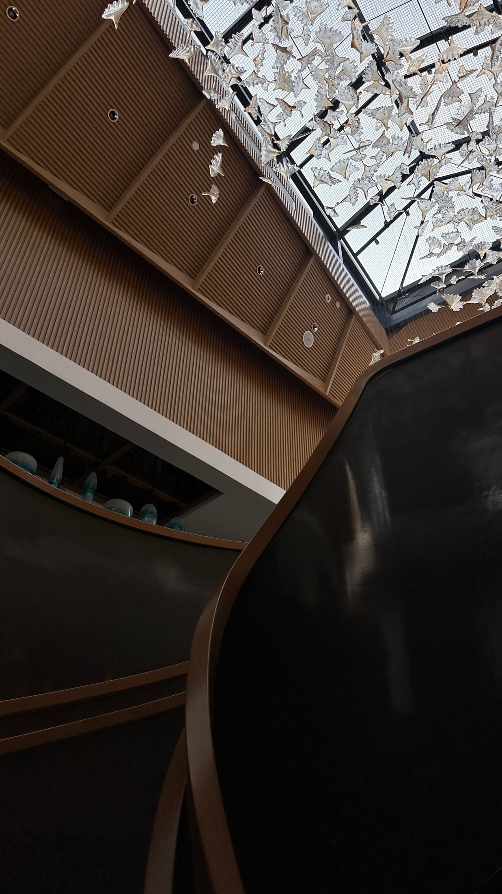
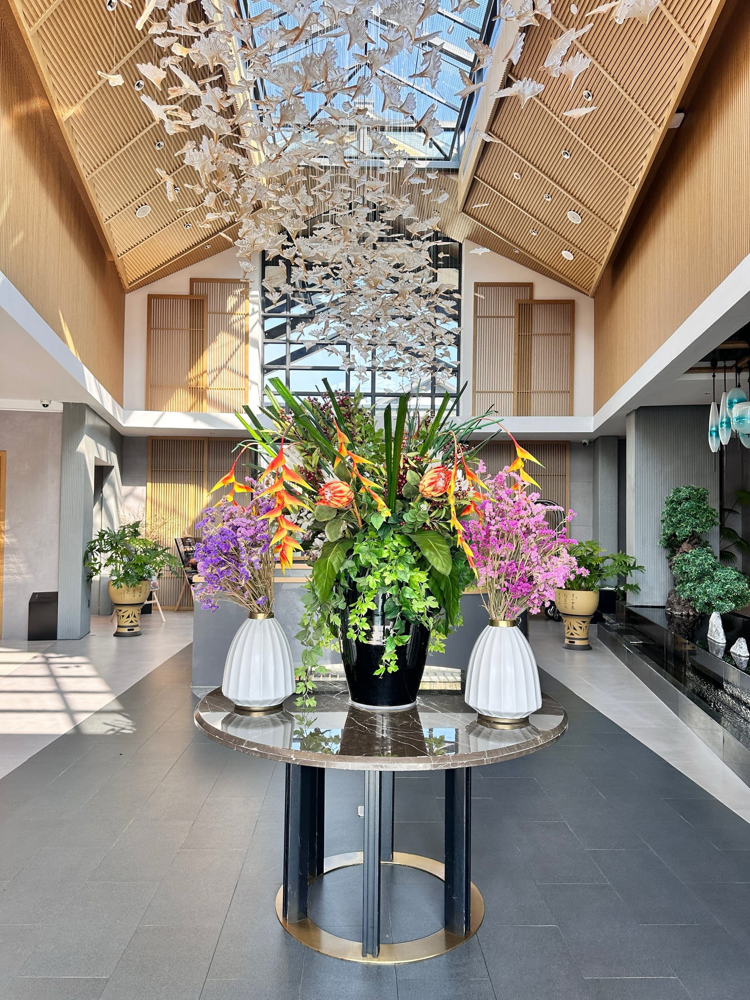
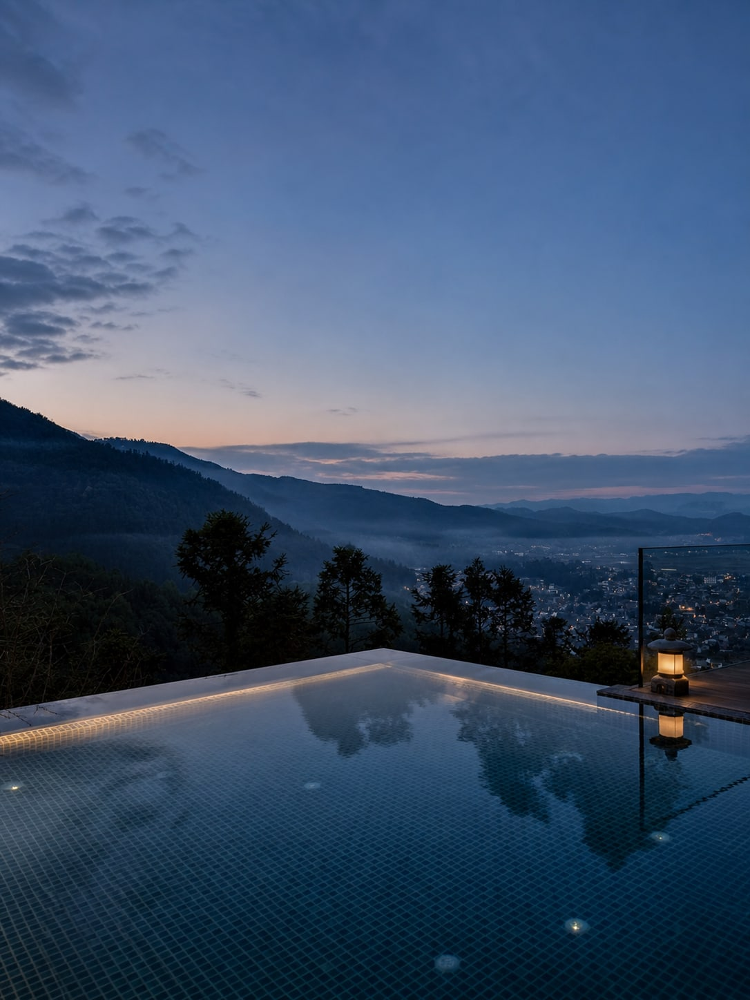
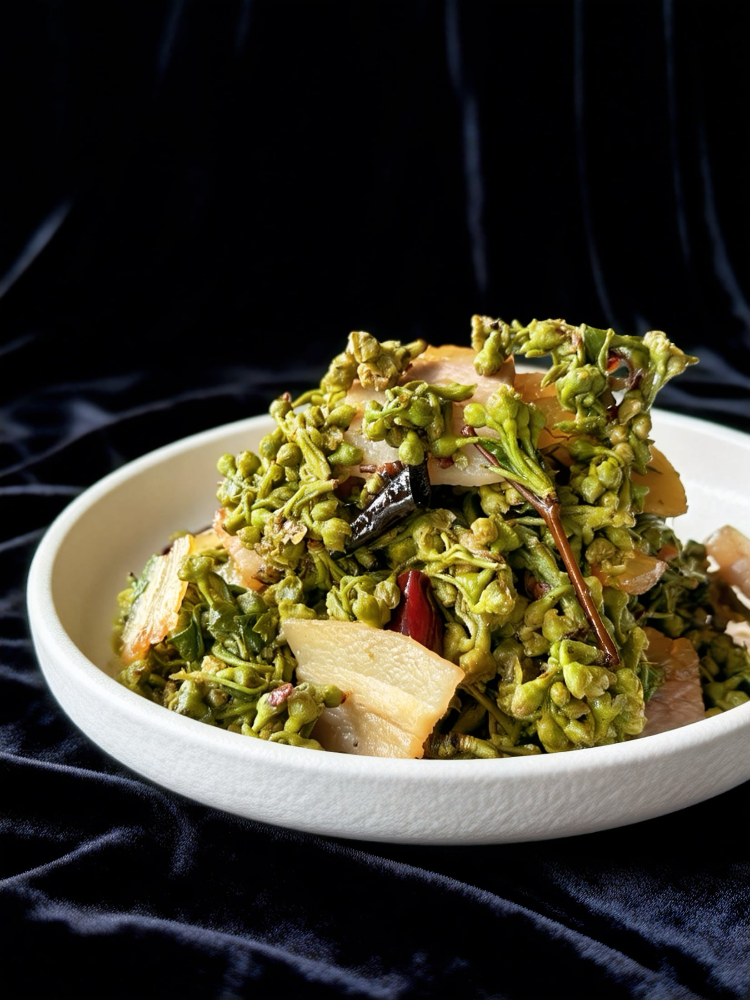
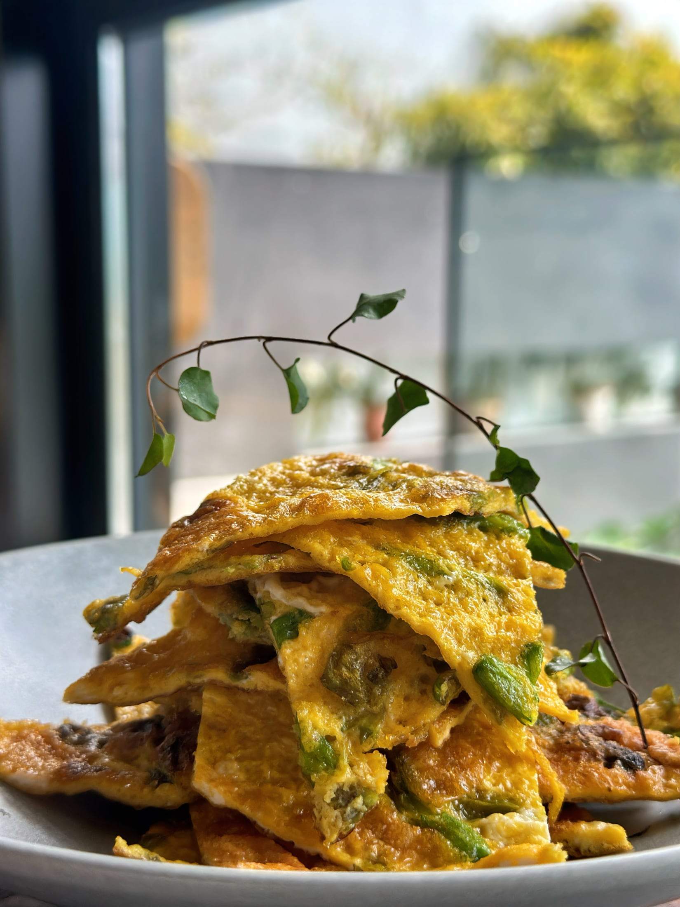

Luxury hospitality · Commission
Lumen Hill
A visual system for a hillside hot-spring hotel
A consistent look the hotel can reuse for every season and every update. We designed seasonal posters and notices, and photographed the hotel's spaces and food.
Problem
Every department made its own materials, so the hotel never looked like one place.
The hotel always has something to say: seasonal greetings, holiday notices, event posters, menus and social posts. Before we started, each department made these on its own. The hotel needed a look it could repeat every season without starting from scratch, and real photographs of its own spaces and food.

Approach
Keep the mark, set the rhythm
We kept the hotel's existing logo and set a steady layout around it: generous margins, natural imagery and a fixed type hierarchy. The Grain Rain, White Dew and Labour Day posters all share one structure.
One layout, every format
Each poster adapts to a vertical social post, a horizontal notice such as the renovation announcement, and the lobby screen.




Photograph the real place
We photographed the infinity pool and its hillside view, the mountain lounge, the lobby's ginkgo installation, the spiral stair and the pool at blue hour, so the hotel has its own images for every channel.





Light each dish for what it is
We chose side light, window light or low light for each dish, on backgrounds such as dark fabric that sit with the hotel's warm palette.




Outcome
One hotel,
one visual rhythm, in print and on screen.
The posters and notices were published and printed. They ran on the hotel's social channels, as printed notices and on the lobby screen. The space photographs now serve the hotel's social media articles, event posters and everyday content; the food photographs serve menus, posters and social posts.
Concept, design, illustration, photography and extensions by North Window Light. Brand positioning and content review by the hotel.
View other projects ↗